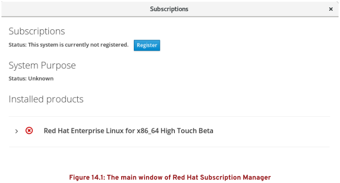

第十四章 安装与更新软件包
目标：
- 从红帽和yum软件包仓库下载、安装、更新和管理软件包。
章节：
- 注册系统以获得红帽支持
- 解释与调查RPM软件包
- 使用yum安装与更新软件包
- 启用yum软件仓库
- 管理软件包模块流
第一节：注册系统以获得红帽支持
目标：
- 完成本节后，学生应该能将系统注册到红帽账户，并使用红帽订阅管理为其分配软件
更新和支持服务的权利。
红帽订阅管理：Red Hat Subscription Management
- 红帽订阅管理提供可用于向计算机授权产品订阅的工具，让管理员能够获取软件包的更新，
并且跟踪系统所用支持合同和订阅的相关信息。
- PackageKit和yum等标准工具可以通过红帽提供的内容分发网络获取软件包和更新。
- 红帽订阅管理工具可以执行下列四项基本任务：
1. 注册（Register）
2. 订阅（Subscribe）
3. 启动软件仓库（Enable repositories）
4. 审核和跟踪（Review and track）
注册系统：
- 可通过图形界面和命令行方式将操作系统注册到Red Hat Customer Portal。
- 图形界面注册：
Activities -> Type to search... -> subscription ->
Red Hat Subscription Manager -> 跟随指引完成注册


从命令行注册：
- 使用subscription-manager命令注册。

授权证书：
- 注册之后，/etc/pki目录中的授权证书存储了本地订阅授权信息。
- /etc/pki/product中的证书指明系统上安装了哪些红帽产品。
- /etc/pki/consumer中的证书指明系统所注册到的红帽账户。
- /etc/pki/entitlement中的证书指明该系统附加有哪些订阅。
- 建议使用subscription-manager工具查看系统订阅信息。
练习 P480：REGISTERING SYSTEMS FOR RED HAT SUPPORT
第二节：解释与调查RPM软件包
目标：
- 完成本节后，学生应该能说明如何以RPM软件包形式提供软件，并使用yum和RPM调查
系统上安装的软件包。
软件包与RPM：
- RPM软件包管理器最先由红帽开发，该程序提供了一种标准的方式来打包软件进行分发
与使用，从归档提取到文件系统的软件（源代码安装）相比，采用RPM软件包形式管理
软件要简单得多。
- 管理员可以跟踪软件包所安装的文件。
- 已安装软件包的信息存储在本地RPM数据库中。
- 红帽的所有软件都以RPM形式提供。
- RPM软件包文件名由四个元素组成：name-version-release.architecture

1. NAME：描述软件名
2. VERSION：原始软件版本号
3. RELEASE：基于该版本的软件包的发行版号，由软件打包商设置，不一定是原始软件开发商。
4. ARCH：编译软件包的CPU处理器架构，noarch表示不限定架构。
- 基于yum安装软件包时，只需要软件包的名称。
- 如果存在多个版本，默认安装最高版本（latest）。
- 每个RPM软件包包含3部分内容：
1. 安装的文件
2. 元数据（metadata）：
如name、version、release和arch；软件包的摘要和描述；依赖关系；授权许可信息；软件包更改日志。
3. 安装、更新或删除软件包时可能运行的脚本。
- RPM软件包验证原理：该过程类似Chrome Mailvelope邮件签名过程
1. 红帽使用相应的GPG私钥对RPM软件包进行数字签名（digitally sign）。
2. 安装RPM软件包的主机的RPM系统使用GPG公钥（/etc/pki/rpm-gpg/RPM-GPG-KEY-*）解密由GPG私钥
加密的签名，通过签名来验证软件包的完整性。
3. 如果GPG数字签名不匹配，RPM系统拒绝安装软件包。
通过RPM包更新软件：
- 红帽默认安装最新版本软件，更新软件时，将先卸载旧版本，再安装新版本（通常保留配置文件）。
- 通常只能安装一个版本的软件包。
- 个别软件可以同时安装多个版本，如kernel。
- 若新版本kernel安装失败而无法引导系统时，可切换至旧版本kernel重新引导系统。
检查RPM软件包：
- rpm命令可以用于管理rpm软件包，也可以查询rpm软件包信息。
- rpm命令默认从本地rpm数据库查询软件包信息，但 -p 选项可以指定未安装的rpm软件包。
- 常用rpm查询命令示例：
$ rpm -qa：查询所有已安装的rpm软件包
$ rpm -qf <filename>：查询指定文件所属的rpm软件包
$ rpm -q <package_name>：查看当前已安装的rpm软件包版本
$ rpm -qi <package_name>：查看当前已安装的rpm软件包详细信息
$ rpm -ql <package_name>：查看当前已安装的rpm软件包中的所有文件
$ rpm -qc <package_name>：查看当前已安装的rpm软件包中的配置文件
$ rpm -qd <package_name>：查看当前已安装的rpm软件包中的文档
$ rpm -q --changelog <package_name>：查看当前已安装的rpm软件包更改信息
$ rpm -q --scripts <package_name>：查看当前已安装的rpm软件包中安装、升级与卸载过程中运行的脚本

$ rpm -qpl <uninstalled_package_name>.rpm：查看未安装rpm软件包的所有文件

安装RPM软件包：
- $ rpm -ivh <package_name>.rpm：安装rpm软件包

- 更推荐使用yum方式管理RPM软件包的安装与更新
* 注意：
1. 安装第三方软件包时，RPM软件包可能会含有在安装过程中以root用户运行任意脚本。
2. 可以从RPM软件包中提取文件，而不安装此软件包。
3. rpm2cpio程序可以将RPM的内容传递给cpio归档工具，后者可以提取所有文件或单个文件。
4. rpm2cpio命令示例：
$ rpm2cpio <package_name>.rpm | cpio -it：查看未安装的rpm软件包中的文件
$ rpm2cpio <package_name>.rpm | cpio -id：提取rpm软件包文件至当前工作目录中
$ rpm2cpio <package_name>.rpm | cpio -id "*txt"：提取rpm软件包中的指定文件

RPM查询命令摘要：
- -p选项：查询未安装的rpm软件包时使用
- 常用rpm相关命令：rpmspec、rpmbuild、rpm2cpio、rpmdb、rpmkeys、rpmsign。

练习 P487：EXPLAINING AND INVESTIGATING RPM SOFTWARE PACKAGES
第三节： 使用yum安装与更新软件包
目标：
- 完成本节后，学生应该能使用yum命令发现、更新与安装软件包。
使用yum管理软件包：
- rpm命令无法与软件仓库一起使用或解决依赖关系。
- yum命令可以安装、更新、删除和获取有关软件包及其依赖项的信息。
- RHEL 8中已使用dnf命令来替代yum命令，而yum命令为dnf命令的软链接。

- 常用yum命令示例：
$ yum help：查看yum使用方法
$ yum list <pattern>：查看已安装与可用的软件包

$ yum search <keyword>：搜索匹配关键字的软件包
$ yum search all <keyword>：搜索匹配关键字的软件包

$ yum info <package_name>：查看软件包的详细信息

$ yum provides <pattern>：查看指定文件由哪个软件包提供

$ yum install <package_name>：安装软件包及依赖包
$ yum update <package_name>：更新指定软件包及依赖包
* 注意：内核升级可以通过 yum update kernel 实现，而且会多个内核共存。
$ yum update：更新系统所有软件包
$ yum remove <package_name>：卸载软件包
* 注意：使用yum命令卸载软件包将卸载相关依赖包！
使用yum安装与卸载软件包组：
- yum具有组（group）的概念，组为针对特定目的而一起安装的相关软件集合。
- 在RHEL 8中，有两种类型的组。
- 常规组（regular groups）是软件包的集合，环境组（environment groups）是常规组的集合。
- 组中软件包可能为mandatory（安装该组时必须安装）、default（安装该组时通常会安装）
或optional（安装该组时不安装，除非特别要求）。
- $ yum group list：查看已安装的与可用的软件包组
$ yum group list hidden：列出隐藏的软件包组

- $ yum group info <group_name>：查看软件包组的详细信息，包含必须、默认与可选的软件包。

- $ yum group install <group_name>：安装软件包组，包含必须、默认与依赖的软件包。

查看yum事务历史：
- /var/log/dnf.rpm.log：记录所有安装与卸载的事务日志

- $ yum history：显示安装与卸载的事务日志

- $ yum history undo <transaction_id>：撤销yum事务

yum命令摘要：
- 如下所示：

练习 P497：INSTALLING AND UPDATING SOFTWARE PACKAGES WITH YUM
第四节：启用yum软件仓库
目标：
- 完成本节后，学生应该能启用和禁用供服务器使用的红帽或第三方yum仓库。
启用红帽软件仓库：
- 将系统注册到订阅服务后，可根据所附加的订阅，自动配置软件仓库的访问。

- yum-config-manager命令可用于启用或禁用软件仓库。

- 非红帽来源通过第三方仓库提供软件，可以通过yum命令从网站、FTP服务器或本地
文件系统进行访问。
- 要启用对第三方仓库的支持，可在/etc/yum.repos.d/目录中创建一个仓库配置文件。
- 仓库配置文件必须以 .repo 扩展名结尾。
创建yum软件仓库：
- 创建yum软件仓库的两种方法：
1. 使用yum-config-manager命令创建
2. 编辑/etc/yum.repos.d/*.repo仓库配置文件创建
- 方法一：使用yum-config-manager命令添加并启用EPEL 8软件仓库
$ yum-config-manager --add-repo <url>：添加并启用URL指定的软件仓库
* 注意：
1. dnf-utils软件包提供 yum-config-manager 命令与 yumdownloader 命令。
2. 教材给出的Fedora软件仓库不可用，该示例使用清华大学的EPEL 8软件仓库，速度更佳。

$ yum-config-manager --enable <repo_id>：启用指定的软件仓库
$ yum-config-manager --disable <repo_id>：禁用指定的软件仓库
- 方法二：通过编辑/etc/yum.repos.d/*.repo文件创建

* 注意：
1. RHEL 8使用rpm软件包安装EPEL 8软件仓库
a. 安装EPEL 8软件源

b. 查看epel.repo仓库配置文件

c. 查看EPEL 8软件仓库状态，只需epel软件仓库可用即可。

2. RHEL 8配置CentOS 8额外软件源：/etc/yum.repos.d/mirror-centos8.repo


练习 P505：ENABLING YUM SOFTWARE REPOSITORIES
第五节：管理软件包模块流
目标：
- 完成本节后，学生应该能：
- 解释如何通过模块安装特定版本的软件。
- 如何列出、启用和切换模块流。
- 从模块安装和更新软件包。
应用流简介：application stream
- RHEL 8引入了应用流的概念，可同时随发行版提供多个版本的用户空间软件包。
- 它们可能比核心操作系统软件包更新得更频繁。
- 传统上如果开发人员想要最新版本的应用，而管理员希望使用最稳定版本，会造成
一种难以管理的局面。
* 注意：
1. AppStream软件仓库中新旧版本的依赖包能很容易卸载，不会与BaseOS软件仓库
中的软件包相冲突。
- RHEL 8中运用一种称为模块化（modularity）的新技术简化了这个过程。
- 模块化允许单个仓库（AppStream）承载多个版本的应用软件包及其依赖项关系。
- RHEL 8内容通过两个主要的软件仓库进行分发：BaseOS、AppStream。
- BaseOS：
1. 以RPM软件包的形式为RHEL提供核心操作系统内容。
2. BaseOS组件的生命周期与RHEL发行版中的内容相同。
- Application Stream：
1. 提供具有不同生命周期的内容，作为模块和传统RPM软件包。
2. 模块描述了属于一个整体的一组RPM软件包。
- 模块可以包含多个流（stream），使多个版本的应用可供安装。
- 启用模块流后，系统能够访问该模块流中的RPM软件包。
模块：modules
- 模块是一组相关联的RPM软件包。
- Module Streams：
1. 每个模块可以具有一个或多个模块流，其包含不同版本的内容。
2. 每个流独立接收更新。
3. 模块流可以视为应用流仓库中的虚拟仓库。
- Module Profiles：
1. 每个模块可以有一个或多个profile文件。
2. profile文件是一起安装的某些软件包的列表，列表包括服务端、客户端、开发或最小安装等。
使用yum管理模块：
- RHEL 8使用Yum version 4（dnf）支持应用流中的模块特性。
- $ yum module list：查看可用的模块列表


- $ yum module list <module_name>[:<stream>]：查看指定模块的所有模块流与profile文件信息

- $ yum module info <module_name>[:<stream>]：查看模块的详细信息

- $ yum module info --profile <module_name>[:<stream>]：查看指定模块的profile文件信息

启用模块流与安装模块：
- yum module enable必须启用模块流才能安装其模块。
- 对于指定模块，只能启用一个模块流，其它模块流将被禁用。
- $ yum module install -y <module_name>[:<stream>]：安装指定模块流的模块
$ yum install @perl：该命令与模块化安装效果相同，@表示模块名。

卸载模块与禁用模块流：
- 删除模块会删除当前启用的模块流的profile所安装的所有软件包，以及依赖于这些软件包的
任何其他软件包和模块。
- 从此模块流安装的软件包如果未在其profile文件中列出，则依然安装在系统上，可手动删除。
* 注意：
1. 切换模块流：重置当前流并启用新流
2. 它不会自动更改任何已安装的软件包，必须手动来完成。
3. 卸载模块需谨慎行事！
- $ yum module remove -y <module_name>[:<stream>]：卸载已安装的模块


切换模块流：
- 切换模块流通常需要将内容升级或降级到不同版本。
- 为确保顺利切换，应首先删除模块流提供的模块。
- 将删除模块的profile文件所安装的所有软件包，以及这些软件包依赖的任何模块和软件包。
- 切换模块流步骤：删除旧模块、重置旧模块、启用并安装新模块。
- 切换postgresql模块流，如下所示：
$ yum module list --installed
$ yum module remove postgresql:9.6
$ yum module reset postgresql

$ yum module install -y postgresql:10

练习 P515：MANAGING PACKAGE MODULE STREAMS
Lab P519：INSTALLING AND UPDATING SOFTWARE PACKAGES